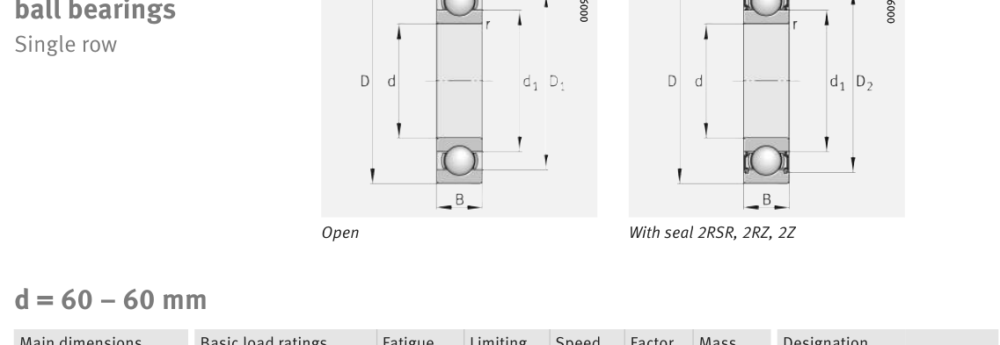

Original catalogue drawing - FAG Schaeffler HR 1, page 258

Scanned from the manufacturer catalogue page listing this part number. All part numbers printed on that table share the same drawing.
Scale cross-section
Blue = inner / outer ring, yellow = rolling element. Drawn to scale from this part's own
dimensions for selection reference only - not a manufacturing or assembly drawing.
Dimension table (mm / inch)
Symbol
Dimension
mm
inch
d
Bore diameter
60
2.3622
D
Outside diameter
95
3.7402
B
Inner-ring / bearing width
18
0.7087
r
Chamfer (min)
1.1
0.0433
Notes
Weights are given in kg. Load ratings are shown in both the original catalogue units and the converted value (1 N = 0.2248 lbf). Data is provided for selection reference only - confirm against the latest official catalogue before ordering.
Main dimensions
Bore d (mm)
60
Outside dia. D (mm)
95
Width B (mm)
18
Inner-ring OD d1 (mm)
71.3
Inner-ring shoulder dia. D1 (mm)
83.9
Load ratings & speeds
Basic dynamic load rating Cr (lbs)
7081
Basic static load rating Cor (lbs)
5216
Basic dynamic load rating Cr (N)
31500
Basic static load rating C0r (N)
23200
Fatigue limit load Cur (N)
1190
Factor f0
15.6
Limiting speed nG (rpm)
10,100
Reference speed nB (rpm)
7,600
Weight
Weight (kg)
0.419
Mounting dimensions (fillets / shoulders)
Housing fillet r max (mm)
1.1
Shaft shoulder da (mm)
66
Housing shoulder Da (mm)
89
Housing fillet ra max (mm)
1
Bearing life (ISO 281 basic rating life)
C / P
Equivalent load P (N)
L10 (106 rev)
L10h at 3,000 rpm
4
7,875
64
356
6
5,250
216
1,200
8
3,938
512
2,844
10
3,150
1,000
5,556
15
2,100
3,375
18,750
Basic rating life per ISO 281: L10 = (C/P)3 with C = 31,500 N. Hours = L10 x 106 / (60n). Life-modification factors for lubrication, contamination and temperature (aISO) are not included.
Source & traceability
Brand
FAG
Source catalogue
FAG / Schaeffler Rolling Bearings HR 1
Catalogue page
p.258 (dimensions)
Load ratings in newtons, fatigue limit load Cur, limiting speed nG and reference speed nB.
Send us the quantity you need and we will come back with price and
lead time, normally within 24 hours. Equivalent parts from other brands can be quoted at the same time.